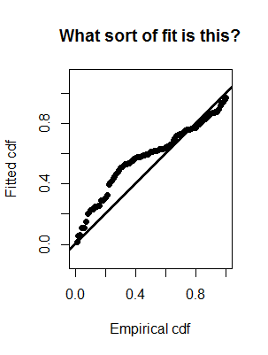

You can skip through questions or sections; you are not required to answer the questions in sequence. The quiz will remember what questions you have answered, so you can go away from the quiz and return to it, keeping your place. Should you wish to begin again, and answer the questions a second time, simply press the Start Over message.
When the boxes into which you mark your answer are round, there is a single correct answer; however when the boxes are square, there is more than one correct answer. Click Submit answer when you have chosen your answer. You will receive messages about why your answer was correct or why your answer was not correct.
